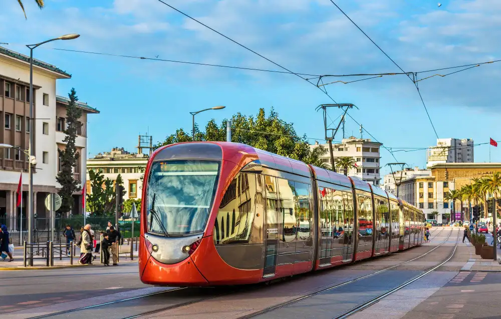

Dada Özet
Aynı haberi 15 saniyede, 1 dakikada ya da derinlemesine okumanızı sağlar.
GÜNCEL ÖRNEK
Asgari ücret ara zammı görüşmeleri — üç derinlikte
Gündemin net hâli.

Gündemi kaçırmayın: günün öne çıkan haberleri, analizler ve özel dosyalar her sabah e-postanıza gelsin.
Keşfet, Dada Haber'in özgün haber ve anlatım formatlarını tek merkezde toplar. Özetten doğrulamaya, bağlamdan veriye — her format neyi çözdüğünü söyler ve güncel bir örnekle açılır.
Her format bir okuma ihtiyacını karşılamak için var. Kart üzerinde formatın ne işe yaradığı ve o formattan güncel bir örnek yazılı.
Aynı haberi 15 saniyede, 1 dakikada ya da derinlemesine okumanızı sağlar.
Günü anlamak için yeterli beş başlık; her akşam 19.00'da yayımlanır.
Bir konunun geçmişini, aktörlerini ve kavramlarını tek dosyada toplar.
Şüpheli iddia, görsel ve videoları kaynak göstererek karara bağlar.
Aynı olayın Türkiye ve dünya basınındaki ortak ve ayrışan anlatımlarını yan yana koyar.
Gündemdeki gelişmenin sizin durumunuza göre karşılığını gösterir.
Seçim, afet, nüfus ve ekonomi verilerini gezilebilir haritalara çevirir.
Sayının tek bakışta anlaşıldığı infografiklerle haberi anlatır.
Okurun sorusunu haber masasına taşır, yanıtı yazılı olarak yayımlar.
Şiddet görselleri kapalı, bildirimler susturulmuş sakin bir okuma modu sunar.
Günlük gündemi ve dosya programlarını sesli olarak dinlemenizi sağlar.
Uzun soluklu konuları bölüm bölüm ilerleyen dosyalarda takip eder.
Soru–cevap bütünlüğü bozulmadan yayımlanan uzun görüşmeleri toplar.
Dada Haber yazarlarının güncel yazılarına ve arşivine açılır.
Yorum, analiz ve perspektif yazılarını haberden görünür etiketle ayırır.
Haber masasının o hafta öne çıkardığı okumaları gerekçesiyle sunar.
Tek karenin anlattığı hikâyeleri ve foto serilerini bir arada gösterir.
Geçmiş yayınları tarihe, kategoriye ve formata göre taramanızı sağlar.
Haber masası her akşam günü beş başlığa indirir. Sıra önem sırasıdır; her başlığın altında neden önemli olduğu tek cümleyle yazılıdır.
Karar, konut ve taşıt kredisi faizlerinin eylülde yeniden fiyatlanacağı anlamına geliyor.
Kısıt, sonbahar ekim takvimini ve buğday alım fiyatını doğrudan etkileyebilir.
Metin bu hâliyle geçerse mevcut sözleşmeler yıl sonunda yeni tavana tabi olacak.
Taslak, üretilen içeriklerde etiketleme zorunluluğu getiriyor; görüş süresi 30 gün.
Sonuç, ekim ayındaki iki maçın gruptaki matematiksel ağırlığını artırdı.
Durumunuzu seçin; gündemdeki gelişmenin size dönük karşılığını gösterelim. Seçiminiz hiçbir yere kaydedilmez.
GÜNDEMDEKİ GELİŞME
Seçilen duruma göre özet burada görünür.
Gündemle ilgili anlaşılmayan bir nokta varsa yazın. Haber masası yanıtlayabildiği soruları kaynak göstererek bu sayfada yayımlar.
Kesinti takvimleri il su idarelerinin duyuru sayfalarından yayımlanıyor. Dada Haber, 14 ilin duyurularını tek listede topluyor ve değişiklik olduğunda listeyi güncelliyor. Şehrinizi hesabınıza eklerseniz kesinti duyurusu bildirim olarak da gelir.
Tavan, yürürlük tarihinden sonra yenilenen konut kira sözleşmeleri için geçerli. Sözleşmenizin yıl dönümü yürürlükten önceyse bu dönem kapsam dışında kalıyor, bir sonraki yenilemede kapsama giriyor. Sözleşme tarihinizi kontrol etmeniz yeterli.
Metin üretiminde kullanılmıyor. Ses okuma, görsel etiketleme ve arşiv taramasında kullanılan araçlar var; kullanıldığı her haberde sayfanın altında "Yapay Zekâ Kullanım Bilgisi" kutusu görünür. Doğrulama kararları her durumda bir editör tarafından veriliyor.
Her haber sayfasının altında "Eksik Bilgi Bildir" ve "Düzeltme Talebi" bağlantıları var. Bildiriminiz haber masasına düşer, doğrulanırsa haberin altında tarihli bir düzeltme notu yayımlanır ve güncelleme geçmişine işlenir.
Tek habere sığmayan konular dosya olarak açılıyor. Her dosya numaralı bölümlerden oluşuyor ve yeni gelişme oldukça büyüyor.
Baraj doluluğundan tarım sulamasına, su tarifesinden şebeke kaybına kadar altı bölümlük dosya.

4 BÖLÜMKira artışından öğrenci yurdu kapasitesine, ilk ev alımından sosyal konuta uzanan dört bölüm.
Hangi mesleklerde ne değişti, düzenleme nerede duruyor, meslek odaları ne diyor?
Kalıcı konut teslim takvimi, esnaf desteği ve okul kapasitesi saha notlarıyla.
Röportajlar kısaltılmadan yayımlanır; düzenleme yapıldıysa metnin başında hangi bölümün çıkarıldığı yazılır.

"Kuraklık bir tarım sorunu değil, planlama sorunu."

"Tavan tek başına arzı artırmıyor; asıl mesele boş konut stoku."

"Etiketleme zorunluluğu yaptırımsız kalırsa metin sembolik olur."
Seçki tıklanma sayısına göre değil, haber masasının değerlendirmesine göre yapılır. Her seçimin yanında neden seçildiği yazılıdır.
Neden seçildi: Kuraklık tartışmasının konuşulmayan tarafını sayıyla açtı.

Neden seçildi: Tek görüş yerine ayrışan görüşleri yan yana koydu.
Neden seçildi: Eylülde en çok sorulacak soruya erken yanıt verdi.
Neden seçildi: Rakamın gündelik hayattaki karşılığını gösterdi.
Sorununuza ilişkin çözüm aşağıda olabilir!
Yeni eklediğim içerik Ana Sayfa'da görünmüyor ne yapmalıyım?
ÇözümAna sayfa içerik seçimlerimizde, site içi işleyişin ve içerik akışının bozulmaması adına editörlerimizin öncelik ve tercihleri etkili olmaktadır. Bu sebeple, sürekliliğin sağlanması ve olabildiğince tüm kullanıcı içeriklerine yer verilmesi adına kategori sayfaları sürekli olarak güncellenmektedir.
Eğer sorununuz halen daha çözülmediyse bizimle iletişime geçebilirsiniz.